Así vive el cliente su compra, de principio a fin
Recorrido real del sitio en un celular, desde que la compra queda pagada hasta que descarga sus fotos editadas. Se hizo en una copia de prueba con datos ficticios y fotos de muestra: nada de esto salió a clientes reales. Las pantallas tienen desplazamiento: baja dentro de cada teléfono para verla completa.
→ Ir a «Así quedó» (después de las mejoras)
- 1Compra confirmada
- 2Antes del evento
- 3El día de la sesión
- 4Llegan sus fotos
- 5Elige sus fotos
- 6Edición y entrega
Dónde está cada cosa (lo que hoy existe)
| Pantalla | Para qué sirve | Cómo llega el cliente |
|---|---|---|
| Su reserva /r/… | El QR, su día, lo que compró y, después de la sesión, la tarjeta «Tus fotos» con miniaturas y avance. | Enlace del correo de confirmación. |
| Su galería /g/… | Ver las fotos con marca de agua, elegir, pagar fotos de más, subir acabado y descargar las editadas. | Correo «Ya puedes ver tus fotos» o el botón de su reserva. |
| Su perfil /p/… | Su rango y la lista de sus compras. | «Ver todo tu historial» en su reserva. |
Ojo: el perfil no muestra las miniaturas ni el avance de las fotos; eso vive en la página de la reserva y en la galería. Es una de las mejoras propuestas abajo.
Ya corregido durante esta revisión (en producción)
HECHODespués del check-in o de la sesión, la página de la reserva volvía a decir «Falta un paso» y «el pago sigue pendiente» a quien ya había pagado. Ahora dice «Gracias por venir», quita el QR de entrada y deja sus fotos arriba. También se cambió el texto de la galería vacía, que prometía un aviso por WhatsApp cuando los avisos salen por correo.
Compra confirmada
Apenas se aprueba el pago ve su reserva con el QR, y le llega el correo de confirmación con el QR adentro.
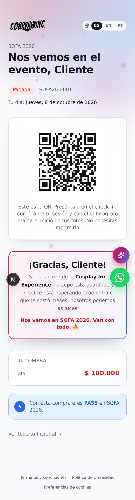
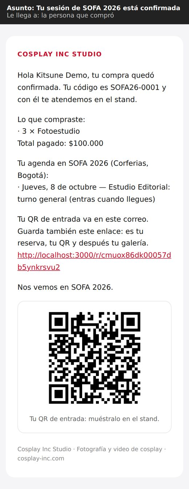
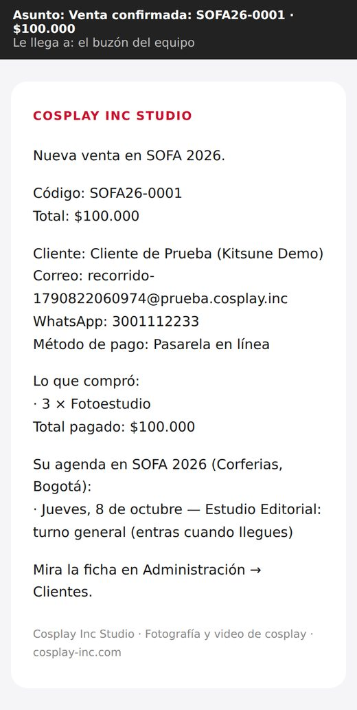
Qué mejorar
- ALTALos botones flotantes (asistente y WhatsApp) tapan contenido en el celular: aquí cubren el «Gracias» y, más adelante, el total de «Tu compra» y las fotos de la galería. Dejarles un margen abajo o esconderlos en reserva y galería.
- MEDIA«Con esta compra eres PASS» no dice qué significa. Explicar en una línea qué incluye su rango y qué ganaría con el siguiente.
- MEDIAEn el correo, un botón «Ver mi reserva» en lugar del enlace largo, y el QR más arriba: es lo que se busca en la fila.
- BAJALa página saluda con el nombre legal («Gracias, Cliente») y el correo con el nombre cosplay («Hola Kitsune Demo»). Usar el mismo en los dos.
Antes del evento
Su perfil muestra el rango y la compra. Si intenta abrir la galería antes de la sesión, ve una página de error.
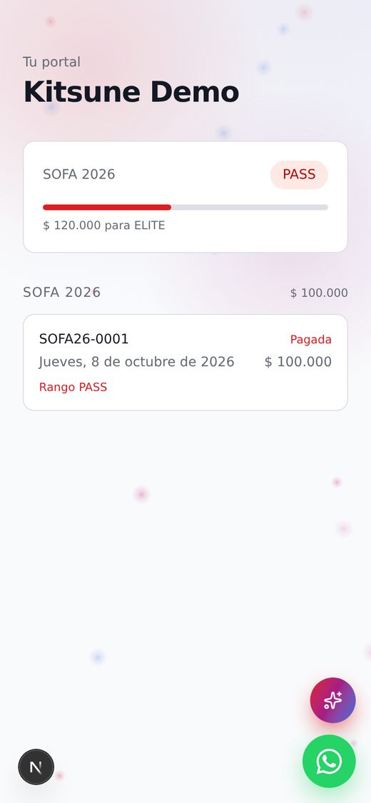
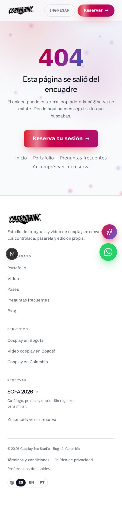
Qué mejorar
- ALTAEl perfil se ve vacío: sin QR, sin enlace a la galería, sin miniaturas ni avance. Convertirlo en «mi espacio»: cada compra con su estado, su QR, sus fotos y un botón a la galería.
- MEDIAGalería antes de la sesión: en vez del 404, «Tu galería se abre después de tu sesión del jueves 8 de octubre» con enlace a su reserva.
El día de la sesión
Hace check-in con su QR y, al terminar, el equipo marca la sesión como atendida. Le llega un correo de agradecimiento.
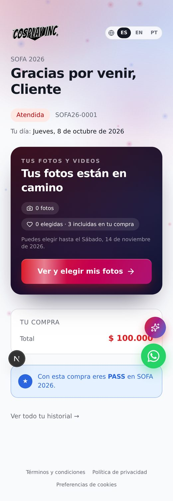
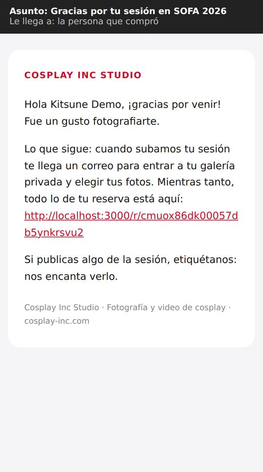
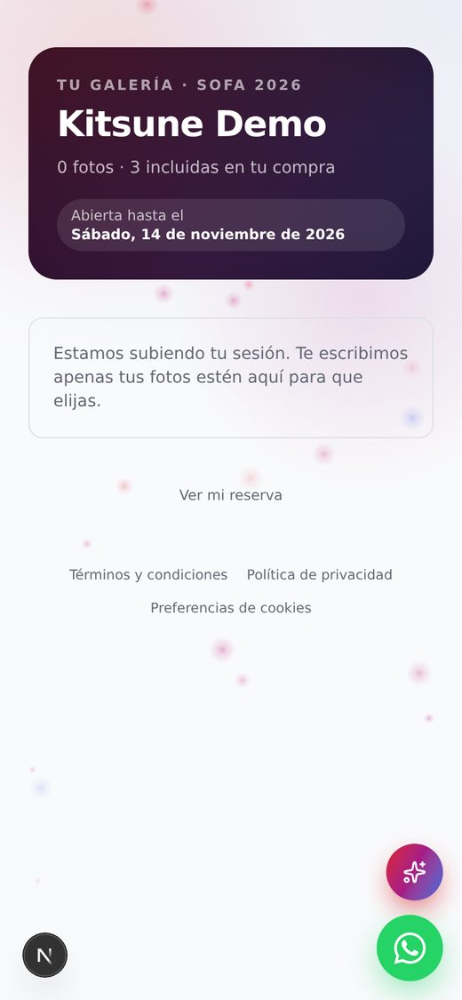
Qué mejorar
- ALTA«Tus fotos están en camino · 0 fotos» con un botón «Ver y elegir mis fotos» que lleva a una galería vacía. Mientras no haya fotos: «Estamos subiendo tu sesión, te avisamos por correo» y la fecha estimada, sin botón.
- ALTAUna línea de tiempo del pedido para el cliente: Pagada → Sesión hecha → Fotos subidas → Elegiste → En edición → Listas para descargar, con fechas. El admin ya tiene esa misma línea en «Ventas y pedidos»; se puede mostrar al cliente en su reserva y en su perfil. Es lo que responde «¿y mis fotos?» sin escribir por WhatsApp.
Llegan sus fotos
El equipo sube las miniaturas, con marca de agua, desde «Subir miniaturas», y le llega el aviso.
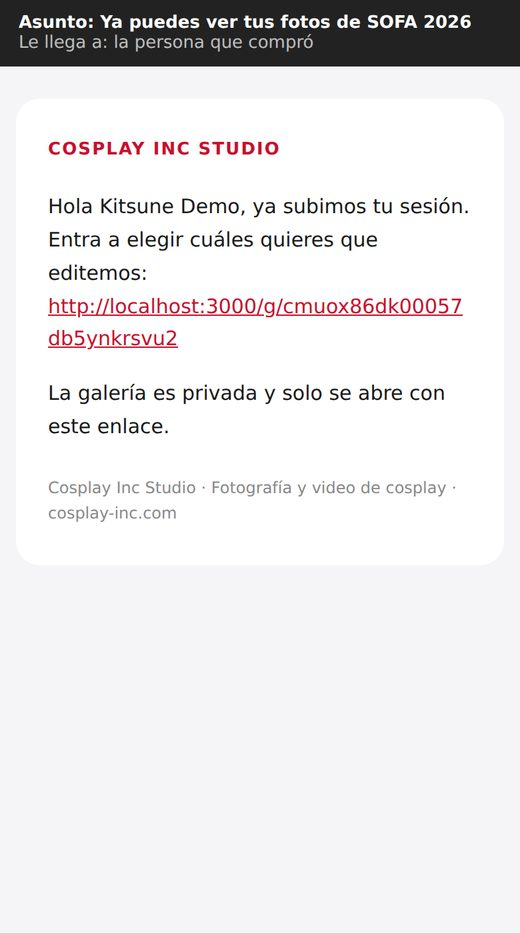
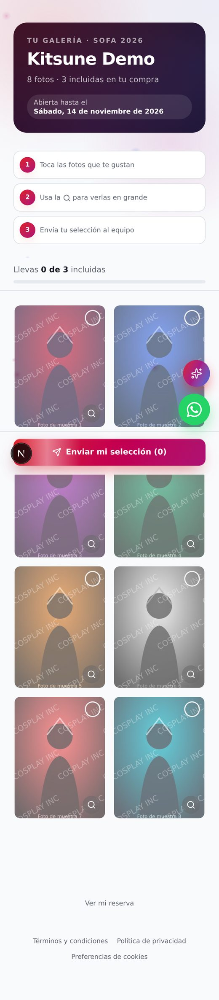
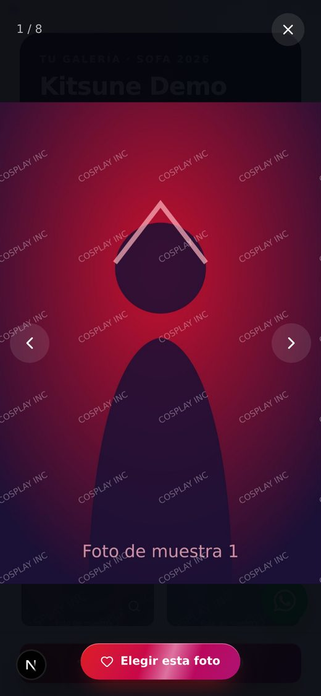
Qué mejorar
- MEDIAAl correo de la galería le faltan los datos que crean urgencia: cuántas fotos incluye, hasta qué fecha puede elegir, una miniatura y un botón grande.
- BAJALos 3 pasos ocupan la primera pantalla del celular. Mostrarlos la primera vez y luego plegarlos, para que las fotos aparezcan antes.
Elige sus fotos
Si elige más de las incluidas, la de más aparece como «Ampliación» con su precio y el botón para pagarla. Al enviar, el equipo recibe la lista y ella un correo de confirmación.
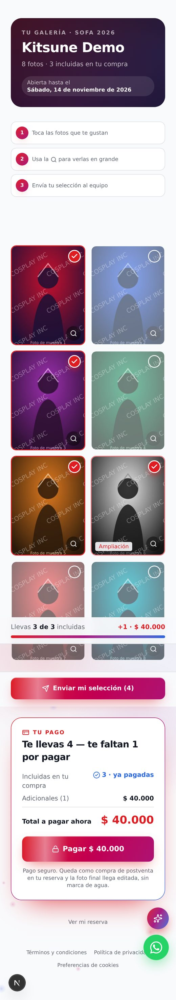
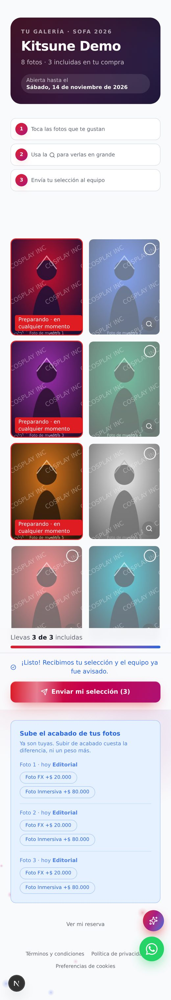
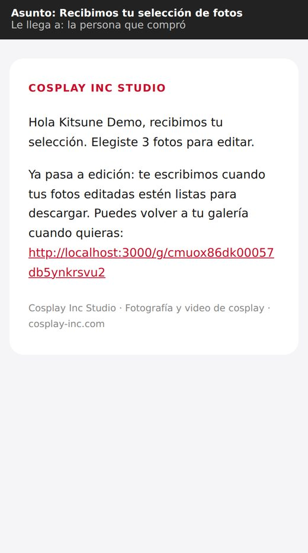
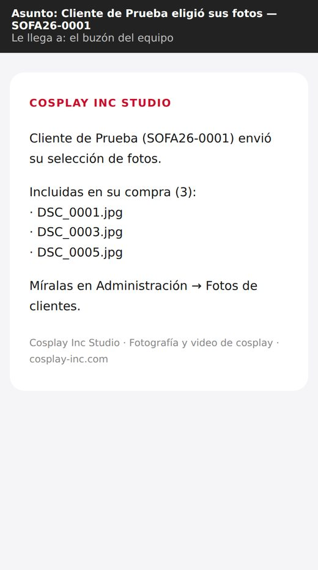
Qué mejorar
- MEDIADespués de enviar, el botón «Enviar mi selección (3)» sigue igual de llamativo, como si faltara algo. Cambiarlo a «Selección enviada ✓ · cambiarla».
- BAJALa oferta de acabados dice «Foto 1, Foto 2, Foto 3» sin miniatura: poner la foto al lado para que sepa cuál está mejorando.
Edición y entrega
Cada foto elegida muestra «Preparando» hasta que el editor la entrega, y entonces «Descargar». Aquí se simularon dos fotos entregadas y una en edición.
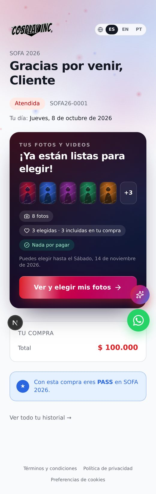
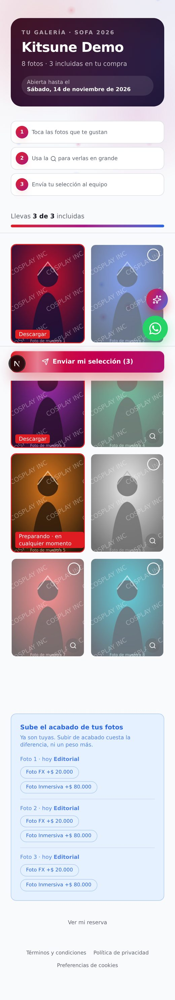
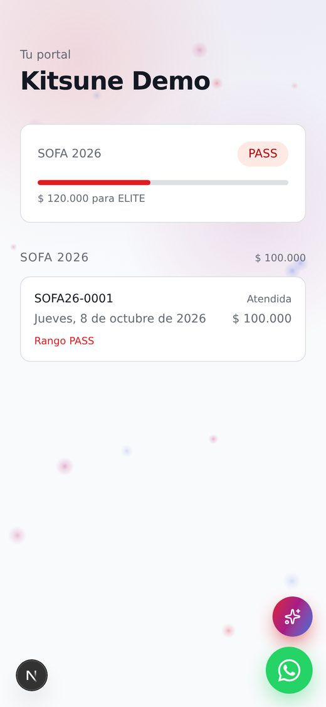
Qué mejorar
- MEDIALa etiqueta roja «Preparando · en cualquier momento» sobre la foto es confusa y parece una alerta. Mejor «En edición · lista aprox. el 20 de oct.» en tono neutro, y «Lista ✓ Descargar» en verde.
- MEDIAUn botón «Descargar todas» cuando ya hay varias listas.
- ALTAEl perfil no se entera de nada de esto (ver etapa 2).
Así quedó
Ya en producción. Cada página del cliente tiene ahora «Tu pedido»: en qué paso va, cuánto lleva y lo que sigue, siempre con una sola acción. El perfil pasó a ser su espacio, con todas sus compras, fotos y su nivel.
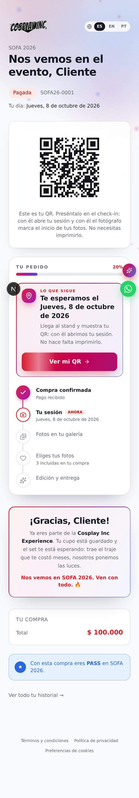
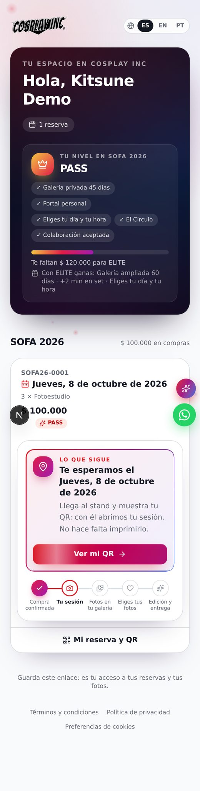
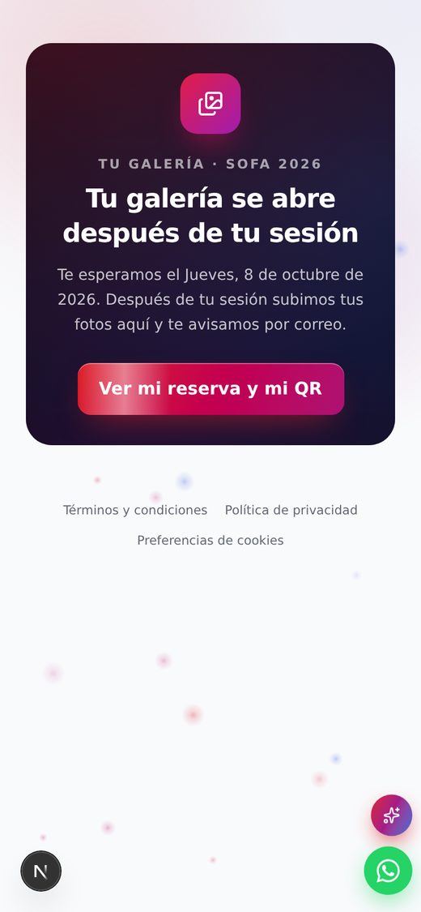
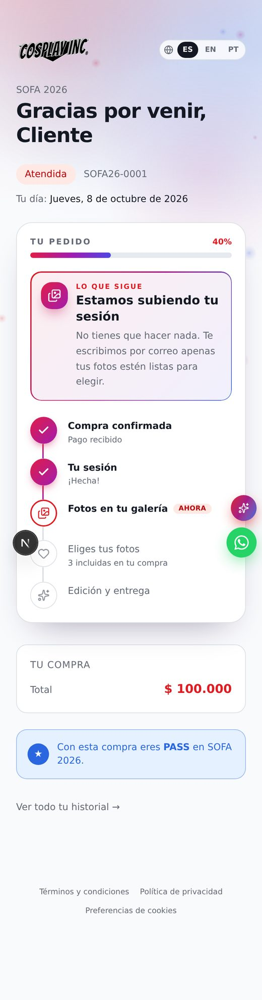
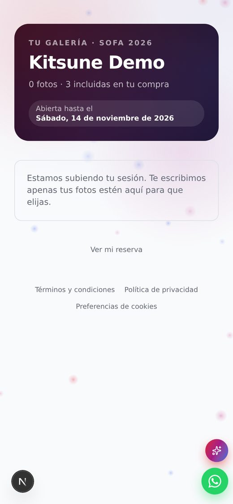
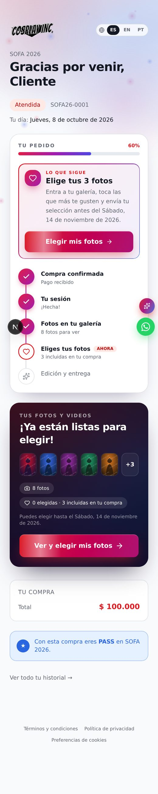
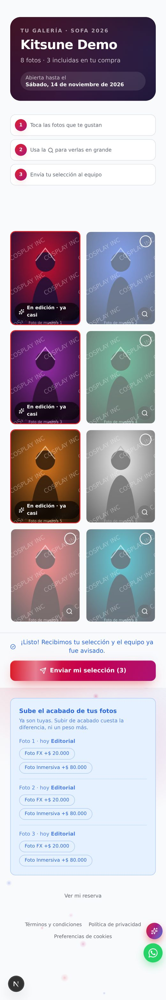
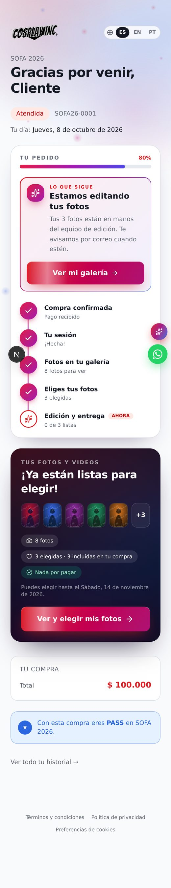
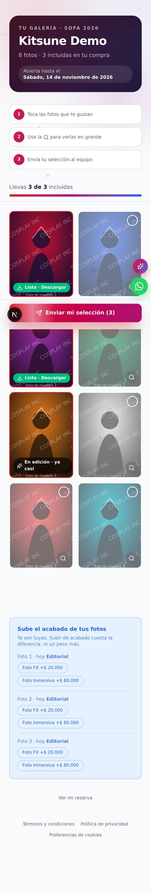
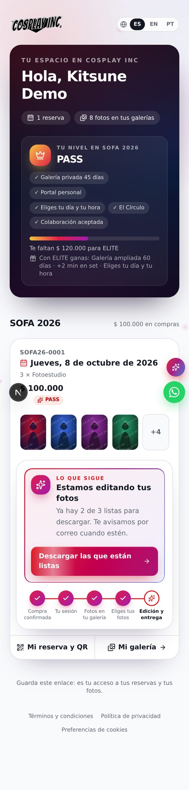
Hecho
- HECHOLínea de tiempo del pedido para el cliente, en la reserva y en el perfil, con «Lo que sigue».
- HECHOPerfil como «mi espacio»: nivel y beneficios, compras con miniaturas, QR y galería.
- HECHOSin «0 fotos» con botón a una galería vacía; sin 404 antes de la sesión.
- HECHO«En edición · fecha» neutra y «Lista · Descargar» en verde.
- HECHOBotones flotantes más pequeños en el celular en las páginas del cliente.
- HECHOCorreo de galería con cuántas fotos se subieron, cuántas incluye y hasta cuándo elegir.
Quedan pendientes las mejoras medias y bajas de las etapas de arriba (por ejemplo, botón en lugar de enlace largo en los correos y «Descargar todas»).
Cómo verlo ustedes mismos con un cliente real
- Su perfil: en la ficha del cliente (Ventas y pedidos → abrir) hay un enlace a su portal.
- Su galería, tal como la ve: en «Subir miniaturas» → buscar el código → «Ver como el cliente». Es una vista de solo lectura: desde ahí no se envía ni se paga nada.
- Su reserva: es el enlace del correo de confirmación. Hoy la ficha no tiene un botón directo «Ver como cliente» para esta página; sería una mejora pequeña.
Hecho en una copia de prueba con datos ficticios, el 1 de octubre de 2026. Los enlaces de los correos dicen «localhost» por eso; en producción dicen cosplay-inc.com. El círculo con la «N» abajo a la izquierda es una herramienta de desarrollo y no aparece en el sitio real.